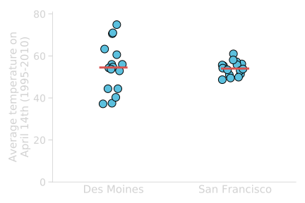
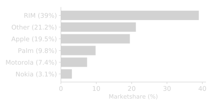

Life Sciences 40
Lecture 3:
Visualizing Data
Khris Griffis
Previously
In Statistics, we practice estimating uncertainty of our chosen descriptor for a given set of data, i.e. a collection of simple events.
We then borrow simple probability methods to determine the relative frequency of our simple event.
We then construct a chance model based on an expected probability of our simple event.
- A descriptor is a parameter or statistic of a population or sample, respectively.
- We call this frequency a proportion.
- We draw cards from a deck, or flip a coin.. or best, we use a .
- The chance model is a type of NULL HYPOTHESIS which can be derived from a formula or by computer simulation.
Probability Recap: The Long Run
We used a coin-flip simulation to model Buzz (the dolphin) getting $\frac{15}{16}$ correct button choices by chance.
How many of these 1000 simulations produced 15 or more correct choices by Buzz?
1 out of 1000
What proportion of simulations were as extreme or more than Buzz's?
$\frac{1}{1000}=0.001$
What is the distribution of Heads per 16 coin-flips a simulation of?
The Null Hypothesis
Simulating with Husbandry
Descriptive Statistics
Statistics allow us to reduce our data to fewer numbers, often a single value, in order to make describing our observations simpler.
But at what cost?Some common descriptors we use to describe data are:
- Mean and variants
- Median
- Mode
- Range
$\mu \text{ or }\bar{x}=\frac{1}{N}\sum_{i=1}^{N} x_i$.
$M\text{ or }\tilde{x}=\text{ The middle element of the sorted array.}$
Most frequent value in the data, can occur $\geq 0$ times.
$min(x),\text{ or }max(x)$
Statistics can be Robust
A robust estimator is resistant to biases caused by outliers present in the data.
The mean is a symmetric, non-robust descriptor while the median is a robust descriptor.
| 2.5 | 3.2 | 3.5 | 3.9 | 4.0 | 4.4 | 5.3 | 5.9 | 6.1 | 6.4 | 30 |
Mean: 4.52
Median: 4.2
Mean: 6.84
Median: 4.4
Describing the Shape
Central Tendency
Population vs. Sample: The Shape
You can imagine drawing a random sample from some population.
If the population is very large (or unknown) and our sample relatively small, how likely is our sample to look like the population?
How do we describe the shape of our sample?
First we need to come up with a way to view the values so that a shape can be determined.
Skewness
Skewness refers to shape of the distribution with regard to the tails.
Building a Histogram
Start with a dot-plot
Building a Histogram
The Choose a binning..
Building a Histogram
And refine your binning.
Viewing the shape of data
The standard deviation
A common measure of data variability is
the standard deviation (SD). It measures the spread of the data in a sample
$$s=\sqrt{\frac{1}{N-1}\sum_{i=1}^{N}\left( x_i - \bar{x}\right) ^2}$$
Variance
$s$ for a sample
$\sigma$ for a population
$s=\sqrt{\frac{(x_{1}-\bar{x})^2+(x_{2}-\bar{x})^2+...+(x_{n}-\bar{x})^2}{n-1}}$
$s=\sqrt{\frac{\textrm{sum of observed squared difference from sample mean}}{\textrm{number of observations - 1}}}$
The standard deviation
Let's consider 2 sets of data, both have a mean of 100
| Numbers | Mean | SD |
|---|---|---|
| 100, 100, 100, 100, 100 | 100 | 0 |
| 90, 90, 100, 110, 110 | 100 | 10 |
Set 1: all values are equal to the mean, so there is no variablility at all
Set 2: one value equals the mean and other four values are 10 points away from the mean. So the average distance away from the mean is about 10
Example for Set 2:
- Calculate the sample mean: $\bar{x}=100$
- For each observation, calculate the difference between the data value
and the mean: [-10, -10, 0, 10, 10] - Square each difference in step 2: [100, 100, 0, 100, 100]
- Sum the squared differences in step 3, and then divide this sum by $(n-1)$:
variance $s^2=\frac{400}{5-1}=\frac{400}{4}=100$ - Take the square root of the value in step 4: $s=\sqrt{100}=10$
Beware of the standard deviation
Like the mean, the standard deviation does not cope well with skewed distributions.
The SD is only useful in the context of the normal distribution

The Empirical Rule:
For any bell-shaped curve, approximately
- 68% of the values fall within 1 SD of
the mean in either direction
- 95% of the values fall within 2 SD of
the mean in either direction
- 99.7% of the values fall within 3 SD of
the mean in either direction
Misuse of SD is everywhere
The range
The range gives you the most basic mutedBluermation about the spread of a dataset. It is calculated by the (arithmetic) difference between the lowest and highest data value.
Interquantile range
The median divides the data into two equal halves (it is the $50^{th}$ percentile). If we divide each of those halves again, we obtain two additional statistics known as the first (Q1) and third (Q3) quartiles, which are the $25^{th}$ and $75^{th}$ percentiles.
Interquartile range: $\textrm{IQR} = Q3 − Q1$
A value is considered an outlier if it is:
or
larger than $Q3+1.5\times IQR$
Percentiles
The $k^{th}$ percentile is a value in the dataset that has $k\%$ of the data values at or below it and $(100 – k)\%$ of the data values at or above it.
Note:
Here our dataset contains 40 data points.
So each data point correspond to $\frac{100}{40}=2.5\%$ of the data.
Bar graphs are evil
1) Part of the range covered by the bar might have never been observed in the sample
Bar graphs are evil
2) They conceal the variance and the underlying distribution of the data
Bar graphs are evil
3) They are associated with (usually not defined) error bars
Different types, different meanings:
- Descriptive statistics (SD, range)
- Inferential statistics (SEM, CI)
Avoid making bar graphs
To reveal the distribution of the data:
- Display data in their raw form
- A dot plot is a good start
- Dynamite plunger plots conceal data
- Check the pattern of distribution of the values
About Figure 1:
- First set: Gaussian (or normal) distribution (symmetrically distributed)
- Second set: right skewed, lognormal (few large values). This type of distribution of values is quite common in biology (ex: plasma concentrations of immune or inflammatory mediators)”
Plunger plots only: who would know that the values were skewed [...] and that the common statistical tests would be inappropriate?”
"For better characterization of a sample, we prefer dots plots, or box plots for their ability to display a minimum of five measures of the underlying data."
Avoid making bar graphs
- Impact Factor: 12.575 (2015).
The JCI is one of the top journals in the “Medicine, Research & Experimental” category.
To maintain the highest level of trustworthiness of data, we are encouraging authors to display data in their raw form and not in a fashion that conceals their variance.
Presenting data as columns with error bars (dynamite plunger plots) conceals data. We recommend that individual data be presented as dot plots shown next to the average for the group with appropriate error bars (Figure 1).
Avoid making bar graphs
[...] the amount of mutedBluermation they provide is still limited to two values, the mean and the spread.
"For better characterization of a sample, we prefer dots plots, or box plots for their ability to display a minimum of five measures of the underlying data."
You've been warned before!
Dotplot
If the number of data is relatively small, showing directly the raw data and accompanying mean/median is best.
Boxplot
A boxplot is a graphical display of the five number summary for a quantitative variable. It shows the general shape of the distribution, identifies the middle 50% of the data, and highlights any outliers.

A boxplot includes:
- A box stretching from Q1 to Q3
- A line that divides the box drawn at the median
- A line from each quartile to the most extreme data value that is not an outlier. (if no outliers minimum and maxixum)
- Each outlier plotted individually
Boxplot (example)
A boxplot is a graphical display of the five number summary for a quantitative variable. It shows the general shape of the distribution, identifies the middle 50% of the data, and highlights any outliers.
Common mistakes in data reporting
Relative frequencies MUST sum up to 1 (100%)
Common mistakes in data reporting
Relative frequencies MUST sum up to 1 (100%)
Data in pie-chart are hard to interpret

Common mistakes in data reporting
Relative frequencies MUST sum up to 1 (100%)
Data in pie-chart are hard to interpret
3D graphs are misleading
Common mistakes in data reporting
Relative frequencies MUST sum up to 1 (100%)
Data in pie-chart are hard to interpret
3D graphs are misleading
Zero your scale

Common mistakes in data reporting
Relative frequencies MUST sum up to 1 (100%)
Data in pie-chart are hard to interpret
3D graphs are misleading
Zero your scale
Common mistakes in data reporting
Relative frequencies MUST sum up to 1 (100%)
Data in pie-chart are hard to interpret
3D graphs are misleading
Zero your scale
Labels MUST correspond to data
Common mistakes in data reporting
Relative frequencies MUST sum up to 1 (100%)
Data in pie-chart are hard to interpret
3D graphs are misleading
Zero your scale
Labels MUST correspond to data
Getting creative is good.
- Red lines indicate increased poverty.
- Green lines indicate increased wealth.